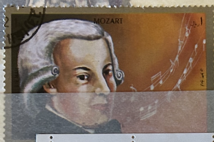
| SOURCE | TITLE| IMAGE MATCH | click to source page |
| eBay | Sharjah Music Famous Composer Mozart stamp 1969 | 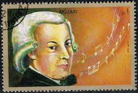 |
| Alamy | Classical period of music classical composer hi-res stock photography and images - Alamy | 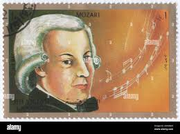 |
| eBay | Ukraine 2018, Music, Great Composer W.A. Mozart, sheet 9v | eBay | |
| Saatchi Art | Wolfgang Amadeus Mozart - Limited Edition 1 of 10 Mixed Media by Teru Noji | Saatchi Art | |
| Viator | Rome Opera Admission: W.A. Mozart's Requiem in D Minor 2026 - BOOK NOW | |
| eBay Australia | SET OF THREE 18" 45CM BELGIAN TAPESTRY CUSHION COVERS, MOZART, BACH & BEETHOVEN | eBay Australia | |
| Zeno.FM | Listen to BA MOZART RADIO | Zeno.FM | |
| Mozart's music composition process | ||
| Tes | OCR A level Music: AoS1 Essay questions 2022-2023 | Teaching Resources | |
| On December 5, 1791, Wolfgang Amadeus Mozart passed away, over two centuries ago. Mozart began composing music at just five years old and created over 600 masterpieces. Remembering Mozart means celebrating his | 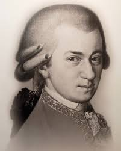 | |
| YouTube | Wolfgang Amadeus Mozart - YouTube | 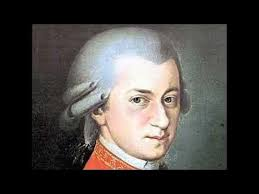 |
| WNYC | Mozart 250 on WNYC | Music | WNYC | 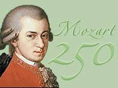 |
| BlueRidgeNow.com | Celebrating Mozart's birth | |
| PicMix | Wolfgang Amadeus Mozart - Free animated GIF - PicMix | |
| Grants Cards and Collectibles | Wolfgang Amadeus Mozart 2021 Pieces of the Past Historical Edition Gol – Grants Cards and Collectibles | |
| ArtMajeur | Wolfgang Amadeus Mozart Iv, Digital Arts by La Galerie De L'Amour | ArtMajeur | |
| Etsy | 5 Paper Party Napkins Musician Music 5 3 Ply Tissue Serviettes FREE UK Postage - Etsy Ireland | |
| Relaxing World | Classical] Wolfgang Amadeus Mozart - The Complete Mozart Edition (2006) (180CD) [FLAC] | |
| Orange County Register | Mozart: The magic's in the melody – Orange County Register | |
| Deezer | Berliner Philharmoniker - Requiem, K. 626 (Ed. Beyer/Levin) : Mozart: Requiem, K. 626 (Ed. Beyer/Levin): IIIf. Lacrimosa (Live) | Deezer | |
| eBay | WOLFGANG AMADEUS MOZART 2021 SUPER BREAK PIECES OF THE PAST BLUE FOIL PARALLEL | eBay | 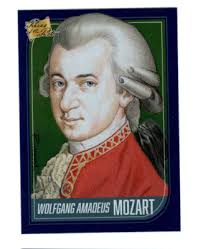 |
| YouTube | Symphony No. 40 in G minor, K.550 - IV. Allegro assai (Mozart, Wolfgang Amadeus) - YouTube | |
| wordsfromlife.com | Wolfgang Amadeus Mozart Quotes | |
| Haiku Deck | BACILLARIOPHYTA by areisen_18 | |
| eBay | Sonata Classical Vinyl Records Glenn Gould for sale | eBay | 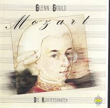 |
| Discogs | Mozart John Eliot Gardiner Don Giovanni Musik | 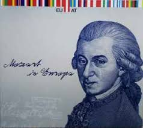 |
| YouTube | Mozart - KV 314:3 (271k) - Oboe Concerto in C major - Rondo_ Allegretto - Albrecht Mayer - YouTube | |
| lastdodo.com | Mozart's 265th birthday 850 (2021) - Central African Republic / Empire - LastDodo | 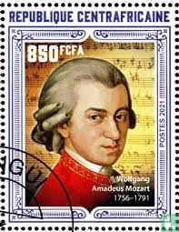 |
| YouTube | Wolfgang Amadeus Mozart -Requiem Mass in D Minor, K. 626: VII. Lacrimosa - YouTube | |
| Fine Art America | Wolfgang Amadeus Mozart 20140121v1 Photograph by Wingsdomain Art and Photography - Fine Art America | |
| Ritwik Garg Arts & Music World (@naturalmusicianandartist) • Instagram photos and videos | 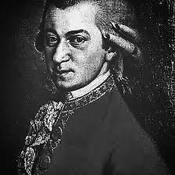 | |
| ALEADO.COM | Kml_ZCk266|Mozart:Opera Boxkosi* fan *tute/ Figaro. marriage / Don *jo Van ni/. pipe ( import CD10 sheets set ): Real Yahoo auction salling | 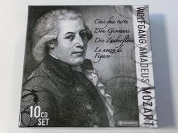 |
| Redbubble | The genius Wolfgang Amadeus Mozart" Essential T-Shirt for Sale by Thornepalmer | Redbubble | |
| YouTube | Kripto Mozart - YouTube | |
| Spotify | Mozart: 5 Contredanses "Non più andrai", K. 609: No. 3 in D Major - song and lyrics by Wolfgang Amadeus Mozart, Wiener Philharmoniker, Claudio Abbado | Spotify | |
| X | Sarah Fish (@sarahfishCO) / Posts / X | |
| Issuu | 10062023 WEEKEND by tribune242 - Issuu | 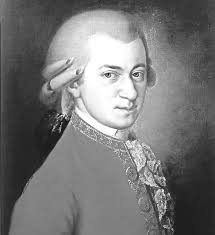 |
| You are the greatest Mozart,the myth,humanity will not forget you,the owner of symphony..."with all my respect for others classical composers" | ||
| レント&ヴィヴァーチェ | Mozart "Day of Tears from Requiem (Lacrimosa)" – レント&ヴィヴァーチェ | 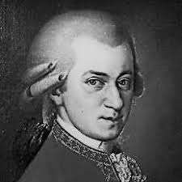 |
| Amazon.com | Amazon.com: Mozart: 1756-1791 (Great Composers): 9781880908815: Jeroen Koolbergen: Libros | |
| Gold and Silver Bullion Canada | 2018 1oz .999 Silver Austrian Silver Philharmonic Mozart | Gold & Silver Canada | |
| ArtPal | Infected Master Chief John-117 - MPRINTS - Paintings & Prints, Entertainment, Other Entertainment - ArtPal | 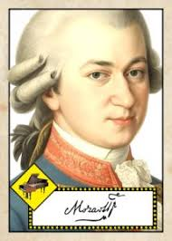 |
| Gianmaria Griglio | Mozart - Die Zauberflöte Overture [analysis] | |
| Pictorem | Wolfgang Amadeus Mozart by lagaleriedelamour Wall Art | 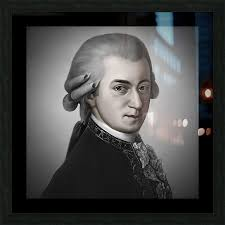 |
| YouTube | Mozart: Menuet in D Major, K. 355 - YouTube | |
| Newly rediscovered Mozart piano piece Allegro in D will premier on our beloved Maestros birthday this year! : r/Mozart | ||
| YouTube | for nathan - YouTube | 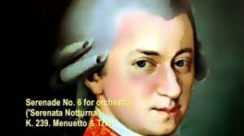 |
| Radio Prague International | Czech-based musicologist claims to have found missing libretto to Mozart's Zaide | Radio Prague International | |
| YouTube | Mozart - Eine Kleine Nachtmusik - Piano Tutorial - YouTube | |
| seattleopera50.com | 1978/79 Don Giovanni Program | Seattle Opera - 50th Anniversary | |
| Unity | 8 Bit Mozart (Vol.1) | Electronic Music | Unity Asset Store | |
| Amazon.com | Composers Calendar - A Music Calendar 2025 A3 Classical Composers - Classical Composers: Bach jr., Peter: 9783969031049: Amazon.com: Books | |
| Home.blog | Christopher King – Christopher King – Owner of Queen City Motors in Springfield, Missouri | |
| eBay | WOLFGANG AMADEUS MOZART 2021 SUPER BREAK PIECES OF PAST SILVER REFRACTOR /250 | eBay | 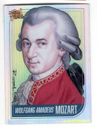 |
| YouTube | Florida Orchestra: Mozart's Requiem - YouTube | |
| Academia.edu | Mozart Circle - Independent Researcher | |
| iStock | Painting Of Mozart Stock Photo - Download Image Now - Wolfgang Amadeus Mozart, Painting - Art Product, 18th Century - iStock | 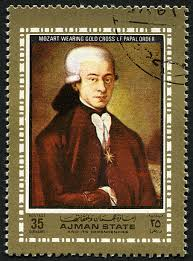 |
| YouTube | History of music - Part V (W. A. Mozart) - YouTube | |
| eBay | France SILK CACHET French Commemorative Stamp First Day Cover Unaddressed (FS132 | eBay | 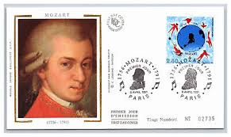 |